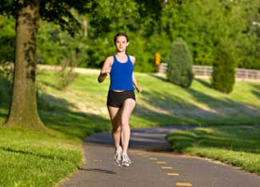

Your bones are dynamic structures. When you’re young, well-nourished and well-exercised, you make more bone than you lose. But bone mass peaks in your 20s, and from that point, it’s all downhill. However, the rate of bone loss depends on several factors, and there are things you can start doing right now that will keep your bones stronger as you age.
What you want to avoid is osteoporosis - bones so porous they’re vulnerable to fracture. According to the National Institutes of Health, 10 million Americans have osteoporosis and 34 million more have osteopenia (bone mass below normal, but not bad enough to qualify as osteoporosis). Anyone can develop these conditions, but women past menopause are most at risk, as they’ve run out of bone-preserving estrogen.
It’s much better to prevent osteoporosis than to treat it. Here are key points toward keeping bones strong:
1. Eat more fruits and vegetables. Edible plants contain a wide spectrum of bone-essential nutrients - protein, calcium, magnesium, potassium, zinc, boron, and vitamins D, K, and C. A varied, plant-based diet provides most of these nutrients. People who eat plenty of fruits and vegetables have higher bone density scores and less evidence of bone loss. Your bones do need protein, but too much animal protein makes your body more acidic, thereby increasing calcium loss in the urine.
2. Consume calcium. In addition to dairy, sources of calcium and other bone-building nutrients include dark-green leafy vegetables (kale, collard and mustard greens); calcium-enriched tofu, soy milk, rice milk and orange juice; molasses, almonds, peanuts, sesame seeds, sunflower seeds, dried beans, seaweed and corn tortillas; calcium-rich herbs, which you can make into teas or vinegar extracts, include nettles, dandelion, yellow dock, red clover, sage and oatstraw; and stinging nettles (wear gloves when you handle the fresh leaves) and dandelion leaves cooked as you would any leafy green.
Because many women don’t consume enough calcium, supplementation is often recommended. Total daily intake (from food and supplements) for teenagers is 1,000 to 1,500 milligrams. Women 19 to 50 need 1,000 milligrams (1,400 if pregnant or nursing). Women over 50 need 1,200 milligrams if on hormone replacement therapy and 1,500 milligrams if not.
3. Move your body. Sedentary people are at risk for osteoporosis. Weight-bearing activities (jogging, jumping rope, climbing stairs, aerobics classes) and resistance training (lifting weights) stimulates bone deposition. Exercise also improves the balance, flexibility and strength necessary to avoid bone-cracking falls.
4. Expose your naked, un-sunscreened skin to sunlight 10 minutes a day. In spring and summer, ultraviolet rays are strong enough to activate vitamin D in the skin. A few foods contain vitamin D - cod liver oil, oily fish, shiitake mushrooms, eggs and fortified milk, soy milk and orange juice - but our primary source is sunshine. This vitamin stimulates calcium absorption from the intestinal tract. Inadequate levels are linked with osteoporosis and bone fractures. Most North Americans don’t maintain healthy blood levels from sunlight and diet. Women over 65 are often advised to take 800 IU a day. Lately, vitamin D researchers have been calling for at least 1000 IU a day - several times the current guidelines for 200 to 600 IU.
5. Watch out for the bone robbers:
6. Maximize your bone mass while you’re young. The earlier you begin to acquire the healthy habits described above, the better. The more bone you deposit by the time you enter your fourth decade, the lower your chances of going broke. If that opportunity has passed, you can work to slow the rate of bone loss (and to educate your daughters, younger sisters and friends).
7. Get tested for osteoporosis. This condition causes no symptoms until you feel the pain of a fractured bone. Dual-energy x-ray absorptiometry (DEXA) offers a safe, painless and reliable measurement of bone mineral density. Doctors often recommend a baseline DEXA scan as a woman begins menopause, then periodic scans to monitor bone loss.
Do you have experience with osteoporosis? Are you taking steps to prevent it? Share your thoughts by posting a comment below.
|
 ISTOCKPHOTO Weight bearing activities such as jogging can help prevent the development of osteoporosis. |
|
|